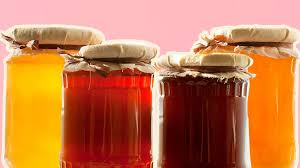

Los Diferentes Tipos de Miel
Publicado el: 6 de noviembre de 2024
Miel Monofloral
Proviene del néctar de una única especie de flor, como la miel de acacia, eucalipto, o azahar. Este tipo de miel se caracteriza por tener un sabor específico y un aroma distintivo que refleja la flor de origen. Por ejemplo:
- Miel de Acacia: Con un color claro y un sabor suave, es ideal para endulzar infusiones sin alterar su sabor.
- Miel de Eucalipto: Reconocida por su aroma fuerte y propiedades expectorantes, es muy útil en casos de resfriados.
- Miel de Azahar: Proveniente del néctar de los cítricos, su aroma floral y propiedades relajantes la hacen perfecta para antes de dormir.
Es ideal para quienes buscan sabores únicos y delicados, así como para aprovechar las propiedades específicas asociadas a cada flor.
Miel Multifloral
También conocida como miel de flores silvestres, es recolectada de una mezcla de néctares de diferentes flores. Este tipo de miel ofrece un sabor complejo y rico en matices, que varía según la temporada y la región de cosecha. Sus características principales son:
- Color y sabor que pueden ir desde claro y suave hasta oscuro e intenso, dependiendo de las flores predominantes.
- Es una de las mieles más nutritivas, rica en vitaminas, minerales y antioxidantes.
Es perfecta para quienes desean disfrutar de una miel versátil que combina lo mejor de diversas plantas, siendo ideal para postres, marinados o como complemento en desayunos.
Miel Oscura y Clara
La clasificación entre miel oscura y clara depende del tipo de flores y plantas de las que proviene. Cada una tiene propiedades únicas que las hacen adecuadas para diferentes usos:
Miel Oscura
Como la miel de bosque o castaño, es rica en minerales como hierro, potasio y magnesio. Su sabor es más intenso y menos dulce, lo que la hace ideal para personas que prefieren un toque menos azucarado. Además, contiene una mayor cantidad de antioxidantes, lo que la convierte en una excelente opción para reforzar el sistema inmunológico.
Miel Clara
Ejemplos como la miel de trébol o de acacia tienen un sabor más ligero y dulce. Estas mieles son perfectas para endulzar bebidas, yogures o ensaladas de frutas, ya que no alteran el sabor de los alimentos.
Ambas variedades ofrecen beneficios únicos y su elección dependerá del gusto personal y del uso que se le quiera dar.
Conclusión
La diversidad de mieles disponibles refleja la riqueza del mundo natural. Ya sea monofloral, multifloral, clara u oscura, cada tipo de miel ofrece sabores y beneficios únicos que pueden enriquecer tu dieta y mejorar tu salud. Explorar las diferentes variedades te permitirá descubrir cuál se adapta mejor a tus gustos y necesidades.